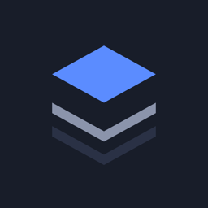

Deckarr
Deckarr is an iPhone, iPad and Apple Watch app for the media services you run yourself: Radarr, Sonarr, Readarr, Lidarr, Prowlarr, Bazarr, qBittorrent, Transmission, Plex, Overseerr and Seerr. It talks to them directly from your device. There is no account and no Deckarr server.
Getting started
- Open Deckarr and tap Add your services.
- Enter each service's address (for example
http://192.168.1.10:7878) and its API key, found in the service under Settings → General. - Away from home, the services need to be reachable from where you are, for example through a VPN such as Tailscale.
To look around first, tap Try with sample data. It shows every screen with made-up films, shows, books and music, and sends nothing anywhere.
Common questions
A service shows as offline. Check that the address opens in Safari on the same device and network, and that the API key is current. On first use, iOS asks to let Deckarr find devices on your local network; this must be allowed (Settings → Privacy & Security → Local Network).
The widgets or the watch say "Open Deckarr". The widgets and the Apple Watch show what Deckarr last loaded. Open the app on your iPhone to bring them up to date.
Notifications arrive late. iOS decides how often apps may check in the background. News arrives sooner the more often Deckarr is used, and none arrives after you swipe it away until you open it again.
Restoring a purchase. Settings → Unlock Deckarr → Restore Purchases, signed in with the Apple Account that bought it.
Contact
Questions, problems and ideas: open an issue on GitHub. Please say which service and version it is about.
Deckarr is not affiliated with or endorsed by Radarr, Sonarr, Readarr, Lidarr, Prowlarr, Bazarr, qBittorrent, Transmission, Plex, Overseerr, Seerr or Trakt. Their names belong to their owners.
Deckarr på dansk
Deckarr er en app til iPhone, iPad og Apple Watch til de medietjenester, du selv kører: Radarr, Sonarr, Readarr, Lidarr, Prowlarr, Bazarr, qBittorrent, Transmission, Plex, Overseerr og Seerr. Den taler direkte med dem fra din enhed. Der er ingen konto og ingen Deckarr-server.
Kom i gang
- Åbn Deckarr, og tryk på Tilføj dine tjenester.
- Indtast hver tjenestes adresse (for eksempel
http://192.168.1.10:7878) og dens API-nøgle, som findes i tjenesten under Settings → General. - Væk fra hjemmet skal tjenesterne kunne nås, hvor du er, for eksempel gennem en VPN som Tailscale.
Vil du se dig omkring først, så tryk på Prøv med eksempeldata. Den viser alle skærme med opdigtede film, serier, bøger og musik og sender intet nogen steder hen.
Spørgsmål
En tjeneste står som offline. Tjek, at adressen kan åbnes i Safari på samme enhed og netværk, og at API-nøglen er gyldig. Første gang spørger iOS, om Deckarr må finde enheder på dit lokale netværk; det skal være tilladt (Indstillinger → Anonymitet og sikkerhed → Lokalt netværk).
Widgets eller uret siger "Åbn Deckarr". Widgets og Apple Watch viser det, Deckarr senest har hentet. Åbn appen på din iPhone for at opdatere dem.
Notifikationer kommer sent. iOS bestemmer, hvor ofte apps må tjekke i baggrunden. Nyheder kommer hurtigere, jo oftere Deckarr bruges, og ingen kommer, efter du har lukket den helt, før du åbner den igen.
Gendan et køb. Indstillinger → Lås Deckarr op → Gendan køb, logget ind med den Apple-konto, der købte den.
Kontakt
Spørgsmål, fejl og idéer: opret en sag på GitHub. Skriv gerne, hvilken tjeneste og version det drejer sig om.
Deckarr er ikke tilknyttet eller godkendt af Radarr, Sonarr, Readarr, Lidarr, Prowlarr, Bazarr, qBittorrent, Transmission, Plex, Overseerr, Seerr eller Trakt. Navnene tilhører deres ejere.